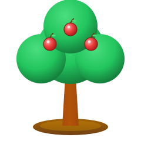

01 LOOK & LEARN
先看懂一個單字
搭配中文意思與圖片，從孩子能理解的單字開始，慢慢建立自己的字彙。
給 6–12 歲孩子的英文練習花園
從一個單字、一段發音開始。
陪孩子找到自己的節奏，把每天的練習，
累積成看得見的成長。
也可先使用訪客模式，從適合的起點開始。

01 / 看見tree 樹 02 / 認識apple 蘋果 03 / 成長grow 長大 每一個單字，都可以是一顆種子。一次專心做一小步
聽、認、拼，逐步練習
把複習留給下一次
從認識，到慢慢熟悉
讓孩子知道現在要做什麼，也知道下一步在哪裡。
01 LOOK & LEARN
搭配中文意思與圖片，從孩子能理解的單字開始，慢慢建立自己的字彙。
02 LISTEN & NOTICE
聽發音，再試著選出聽到的單字。用清楚的提示，陪孩子把聲音與文字連起來。
03 TRY & GROW
在 iOS App 的引導拼字中逐步練習，並透過後續複習，再遇見學過的單字。
上方為練習方式示意；iOS App 與網頁版的功能、畫面可能不同。
孩子往前一步，家長看得懂
不急著把每個單字都背完。
先找到起點，再把今天的小練習完成。
依孩子目前能做到的事與學習目標選擇路線。起點建議方便開始，也可以再調整。
用每日任務安排新字與複習，讓孩子專心完成眼前的一小步。
可先用訪客模式，或由家長登入建立孩子檔案。帳號、同步與資料刪除方式都有說明。
開始之前
先了解，再選擇適合的使用方式。
字樹花園主要為 6–12 歲孩子設計。年齡不直接等於英文程度，建議依孩子目前的能力與練習目標選擇起點。
可以先用訪客模式開始。訪客進度保留在使用的裝置；若需要帳號與孩子檔案功能，可由家長依畫面登入。請參考使用說明。
目前的功能與畫面可能不同。本頁提供現有網頁練習入口；iOS App 的測試與使用資訊，請透過下方聯絡方式詢問。
起點建議與練習紀錄是協助使用的參考，不是正式程度認證，也不保證考試結果或學習成效。
我們一起，讓下一步更清楚
使用問題、測試資訊，或想分享孩子的練習感受，歡迎寫信。